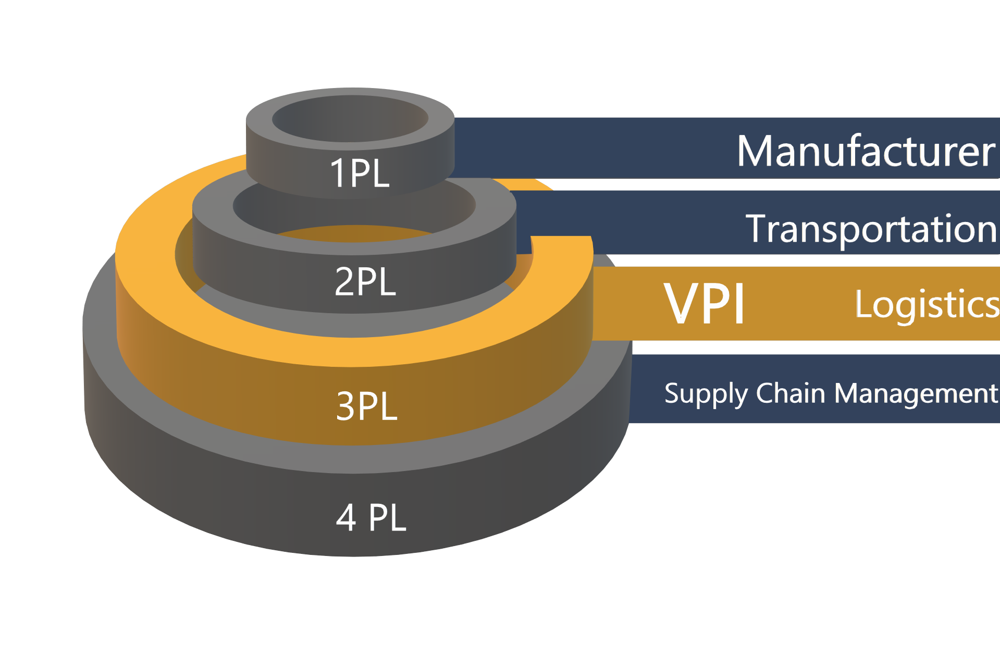

An addition to the shipping community, categorized as organizations that consume
transportation and distribution services, the logistics market place is dominated by
transportation providers, storage providers and Third Party Logistics Providers.

3PL Features
Growth
Outsource supply chain logistics functions to us and grow.
The 3PL logistics sectors estimated annual growth of 20% is primarily driven by the growing trend to outsource supply chain logistics functions.
VPI has developed global networks, by establishing our own operations in key geographies, and by forming alliance partnerships with complimentary service providers. VPI facilitates an extension of the enterprise, providing detailed knowledge of various logistics markets, including transportation, logistics and regulatory issues. Critical information related to storage and distribution, international customs documentation, multi-modal freight rates and preferential trade terms is compiled and processed.
In addition to providing expertise, a key to managing the complexities of a global supply chain with regulatory and other issues, we are able to leverage infrastructure and freight rate negotiations over a large base, providing cost advantages. Additionally, for customers experiencing seasonal demand for their product, outsourcing the logistics function transforms a fixed cost into a variable. This can have a significant benefit to the bottom line.
In a study performed by Ernst & Young and the University of Tennessee, organizations using 3PL companies reduced logistics costs by an average of 7.8%; achieved a reduction in logistics assets of 21.6% and a reduction in order cycle time from 6.3 to 3.5 days.
Optimization
Let's work together to set the infrastructure for a faster process in the supply chain.
The growing emphasis on information technology, a key enabler in an information intensive global economy, has created challenges as well as opportunities in the area of supply chain logistics. The majority of large corporations have already invested in large enterprise systems (ERP) and are increasingly requiring their supply chain logistics partners to interface with them, facilitating an integrated information flow throughout the supply chain. 3PL providers have responded to this challenge, forming alliances with independent software companies or developing information technology internally. This has in turn created a market for software vendors, who have responded with suites of Supply Chain Execution (SCE) applications. This includes order management systems (OMS), warehouse management systems (WMS) and transportation management systems (TMS).
VPI is able to optimize storage, distribution and transportation networks, track shipments across multiple transportation modes and execute transactions electronically. The use of electronic data interchange (EDI) has been extensively applied, providing opportunities for value added solutions providers in this area. Traditionally this exchange of data has been based on traditional trade and transportation documentation, with standardized transaction sets being exchanged by business partners.
Costs associated with this exchange in many cases precluded the participation of smaller customers, necessitating the manual input of data into logistics systems. The utilization of the Internet, in universal fashion has changed everything. It is now possible to link all logistics partners, no matter how small, providing real time information flows on a global scale.
Storage
Stop worrying about whre you're going to store product.
Public Warehousing
Public warehouses provide storage for a variety of clients, either on a short term, or seasonal basis, or on a longer term. In addition to storage and transportation management these facilities also provide value-added services as required.
Other Storage Providers
In addition to the traditional warehouse facilities, there are specialized facilities that offer national parts distribution, or storage and distribution for products with low velocity or those of a hazardous nature.
VPI has responded to market demand by providing value-added services, which include configuration, final assembly or other functions normally performed as part of ‘final finishing’ in the manufacturing area.
The 3PL logistics sectors estimated annual growth of 20% is primarily driven by the growing trend to outsource supply chain logistics functions.
VPI has developed global networks, by establishing our own operations in key geographies, and by forming alliance partnerships with complimentary service providers. VPI facilitates an extension of the enterprise, providing detailed knowledge of various logistics markets, including transportation, logistics and regulatory issues. Critical information related to storage and distribution, international customs documentation, multi-modal freight rates and preferential trade terms is compiled and processed.
In addition to providing expertise, a key to managing the complexities of a global supply chain with regulatory and other issues, we are able to leverage infrastructure and freight rate negotiations over a large base, providing cost advantages. Additionally, for customers experiencing seasonal demand for their product, outsourcing the logistics function transforms a fixed cost into a variable. This can have a significant benefit to the bottom line.
In a study performed by Ernst & Young and the University of Tennessee, organizations using 3PL companies reduced logistics costs by an average of 7.8%; achieved a reduction in logistics assets of 21.6% and a reduction in order cycle time from 6.3 to 3.5 days.
The growing emphasis on information technology, a key enabler in an information intensive global economy, has created challenges as well as opportunities in the area of supply chain logistics. The majority of large corporations have already invested in large enterprise systems (ERP) and are increasingly requiring their supply chain logistics partners to interface with them, facilitating an integrated information flow throughout the supply chain. 3PL providers have responded to this challenge, forming alliances with independent software companies or developing information technology internally. This has in turn created a market for software vendors, who have responded with suites of Supply Chain Execution (SCE) applications. This includes order management systems (OMS), warehouse management systems (WMS) and transportation management systems (TMS).
VPI is able to optimize storage, distribution and transportation networks, track shipments across multiple transportation modes and execute transactions electronically. The use of electronic data interchange (EDI) has been extensively applied, providing opportunities for value added solutions providers in this area. Traditionally this exchange of data has been based on traditional trade and transportation documentation, with standardized transaction sets being exchanged by business partners.
Costs associated with this exchange in many cases precluded the participation of smaller customers, necessitating the manual input of data into logistics systems. The utilization of the Internet, in universal fashion has changed everything. It is now possible to link all logistics partners, no matter how small, providing real time information flows on a global scale.
Public Warehousing
Public warehouses provide storage for a variety of clients, either on a short term, or seasonal basis, or on a longer term. In addition to storage and transportation management these facilities also provide value-added services as required.
Other Storage Providers
In addition to the traditional warehouse facilities, there are specialized facilities that offer national parts distribution, or storage and distribution for products with low velocity or those of a hazardous nature.
VPI has responded to market demand by providing value-added services, which include configuration, final assembly or other functions normally performed as part of ‘final finishing’ in the manufacturing area.
Transportation Services
The transportation industry includes the following service providers:
Railroads
Motor Freight
Water Transportation
Air Transportation
Contract Warehousing
These organizations provide storage facilities to a single client, normally under a long-term contract. Services provided could include additional value added services such as kitting, configuration etc. This is a growth area, due in large part to the requirements of web-based storefronts.